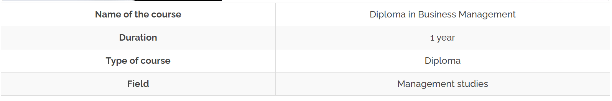
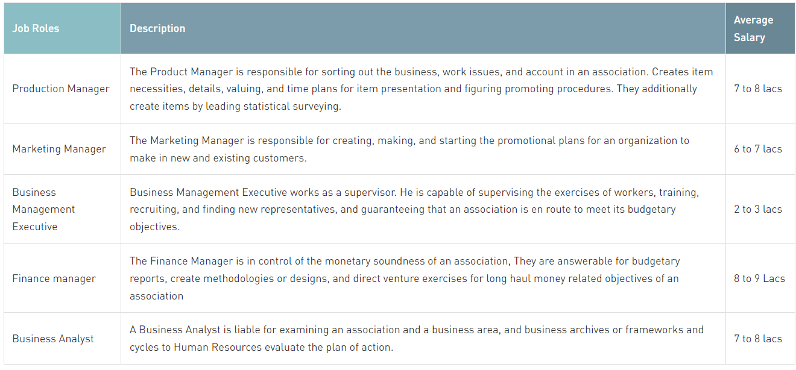

Diploma in Business Management is a 1 year long Diploma certificate course. This course can be pursued by students who have passed 10th standard, 12th standard or those who have completed graduation. In this article, you will be reading details about DBM course. The article covers topics like Diploma in Business Management course details, eligibility criteria, admission process, syllabus, career prospects and salary details.
In simple terms, business management deals with overseeing business operations taking place in an organization or enterprise. Let us consider an example – a manufacturing unit that produces notebooks. It is a business enterprise. Various processes take place in the manufacturing unit each day. Production, purchase, finance management, marketing – these are some such processes.
For the business to function smoothly and profitably, all these processes must take place in a coordinated manner. There must be inter-department coordination. Business management, in simple terms, deals with the supervision and coordination of these business operations/activities.
Business management deals with aspects such as – HR management (personnel), finance management, operations management, accounting, marketing, quality assurance, planning, decision-making etc. For any business to thrive, a great deal of effort must be put towards business management endeavors.
If you are interested in acquiring business management and administration skills right after 10th/12th standard/graduation, this is the best course that you may pursue. Diploma in Business Management course is also known by the name of Diploma in Business Administration (DBA). Let us check out the basic course details now. Eligibility criteria, course duration and admission process details have been provided in the next section-
DBM is a Diploma certificate program related to the field of management education. The course imparts basic and essential management skills to students. If you want to take the first step towards management education, this course will be of help to you.
Duration: DBM course is 1 year long. The course is available in formats like- distance education mode, regular classroom mode and online mode. Fast track DBM programs are 3-6 months long.
Eligibility criteria: Candidates who have passed 10th, 12th & graduation are eligible to pursue this course. But 10th & 12th passed candidates must satisfy some additional requirements though. It has been discussed in detail ahead. Let us check them out-
10th passed (or equivalent) from a recognized board + completed 3 years long Diploma + possess 2 years work experience OR 12th passed with 2 years of work experience OR completed Bachelor’s Degree from a recognized university.
As you can see, some institutes do give admission to 10th passed students. Some other institutes accept only 12th passed or Diploma (3 years course) holders. Readers are supposed to check the criteria followed by an institute while taking admission. Note: Some institutes also demand work experience.
Minimum marks criteria may exist in cases of many institutes. If yes, minimum aggregate marks required is around 45-55% marks (in relevant board examination/Diploma course).
Valid Diploma in Business Management qualification holders may secure admission in relevant 3 or 4 years long Bachelor’s Degree courses. On completing Bachelor’s Degree course, one may pursue relevant Master’s level course. This can be followed up with further advanced courses like M.Phil. and PhD.
Both Government and private organizations require skilled management professionals. Managers ensure smooth functioning of any company, organization or industry. Managers take care of human resource management, day to day operations, finance and accounting activities taking place in companies and organizations.
DBM Diploma holders may secure entry level managerial or administrative jobs at wide variety of companies, business houses, organizations and industries. Note: MBA and PGDM graduates are preferred to take up high profile management jobs and roles. DBM course after 10th or 12th will help one obtain entry level jobs only.
The job roles graduates are offered after the course is given below:
